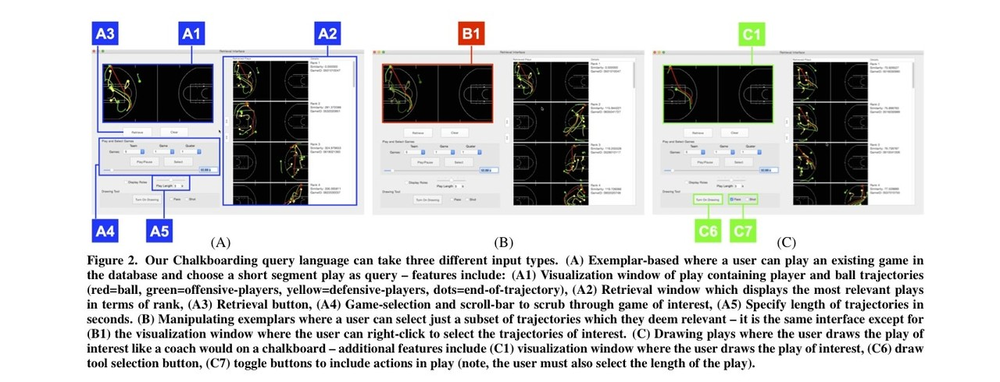
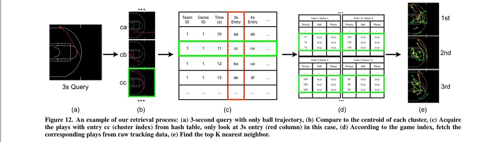
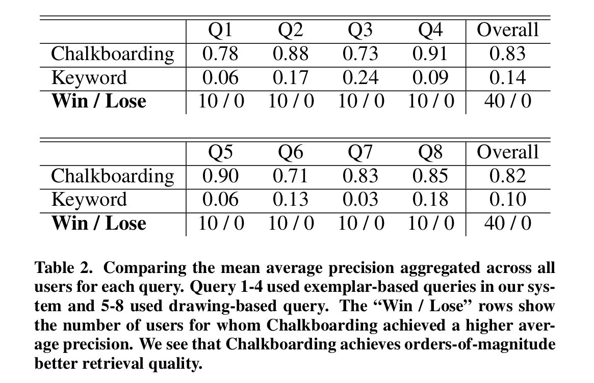
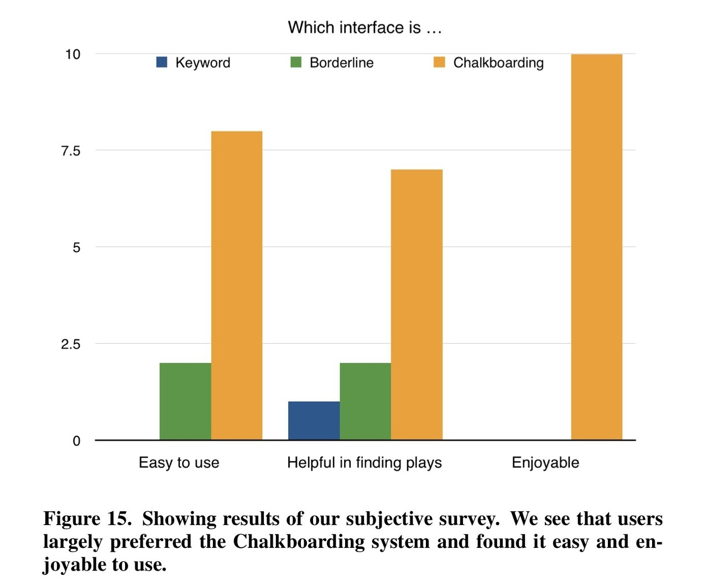

Chalkboarding: A New Spatiotemporal Query Paradigm for Sports Play Retrieval
論文情報
- Chalkboarding: A New Spatiotemporal Query Paradigm for Sports Play Retrieval
- Long Sha, Patrick Lucey, Yisong Yue, Peter Carr, Charlie Rohlf, Iain Matthews
- QUT, Disney Research, STATS LLC, Caltech
- 21st International Conference on Intelligent User Interfaces
- basketball
- http://www.yisongyue.com/publications/iui2016_chalkboarding.pdf
目次
要旨 Abstract
急増するスポーツのトラッキングデータによって、１プレーのデータを効率よく処理することに注目が集まってきている。タグ付けされたデータを素早く検索するシステムはあるが、タグ付けされていないプレーを検索するシステムは未だない。 本文ではChalkboardingと呼ぶ、検索システムを提案する。
Apple風にまとめるなら、“試合中の気になったシーンを入力すれば、過去の試合から類似したプレイを検索することができます。Chalkboardingならタグなしのトラッキングデータのみでね。”
リサーチ課題
スポーツにおけるワンプレーのような、マルチエージェントの時空間軌跡に対するクエリを表現する最良の方法はなにか
リサーチ課題に対する結論
試合中のプレイの例、検索対象となる複数選手、ユーザーが自ら描画した選手の軌道の３つのデータをもとにしたクエリ。
手法
まずは一言で
プレイ検索データベースの構築と類似度（l2距離）によるランキング
手法の具体的な説明
プレイ検索データベースの構築と類似度（l2距離）によるランキング
各時刻ごとに各選手へポジションを割り当てる”役割分布”をプレイごとに導出しておいて、それらをクラスタリングにより階層的なデータベースにすることで、“高速に” 処理のできる、“効果的な” 検索データベースの構築した。
役割分布の計算方法については、このnoteを参照ください
入力クエリの種類と検索方法
まず、入力クエリとしては
- A. 試合中のプレイの例
- B. 試合中のプレイの例から、検索対象となる選手を複数選ぶ
- C. ユーザーが選手の軌道を自ら描画する

の3種類を用意し、それらの入力クエリが与えられたときに、以下の3つの処理を経て、類似プレイのランキングと検索を行う。
1. 入力クエリと検索データベースの各クラスタのボールの軌道の距離を計算し、最も類似しているクラスタのインデックスを得る ((a)~(c))
2. 1.で得られたインデックスに紐づくクラスタに割り当てられているプレイと、入力クエリのトラッキングデータの類似度を役割分布を用いて計算する (d)
3. 2.で得られた類似度をK近傍法によりランキングして、類似プレイとして上位K個を表示する (e)
 従来のアプローチとはどのように異なるか
従来のアプローチはタグ付けがあるデータを前提にしていたが、この研究ではタグ付けされたデータを必要としていない。
結果
人手でタグ付けしたkeywordを用いる比較手法を用いて、その検索精度の定量的な評価とツールの使いやすさの定性的な評価を行ったところ、比較手法より提案手法の方が高精度であった。 評価方法は、8つの検索対象クエリを用いて、平均の精度を用いた。 
また、そのツールの使いやすさという定性的な評価実験も行い、以下のような結果を得た。 
コメント
問題点や議論できることがあれば
論文中のfuture workには、クエリ検索にボールの進行方向やプレイが起きている場所といったスポーツのドメイン知識を活用することで、その検索の高精度化を図りたいと書かれていました。また、類似度の計算指標の改良や、その検索の高速化も展望としてあるようです。
私としては、検索ツールにより実用性を持たせるために、既に各プレイに付けられているタグの情報とトラッキングデータを組み合わせた処理が必要になる気がします。使えるものは使った方がいいし、実際にクエリを入力する際にも、キーワードで検索したい時もあるだろうし。あとは、プレイに関与している選手やチームの情報も詳細検索設定のようにできたらいいのかな。
その他
リサーチクエスチョンに関する論文
手法に関する論文